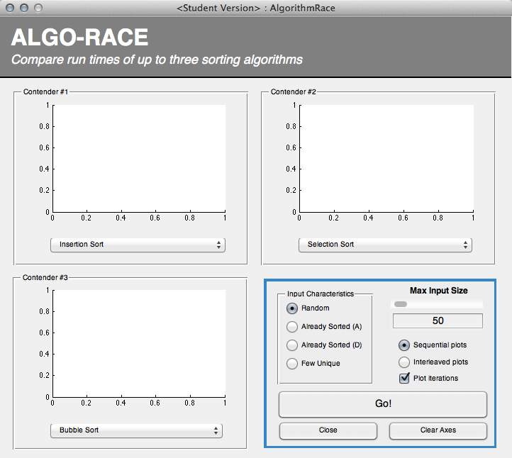

function varargout = AlgorithmRace(varargin) % ALGORITHM-RACE AlgorithmRace.fig % Created by Team Disarray for the 13SS_ENED1091 final group projec % % lays a graphical interface for comparing the run time of various % sort algorithms on different input sizes, and input having different % characteristics (sorted, few unique, etc.) % % See also: AlgorithmExplore.fig global DEBUGGING DEBUGGING = true; % Last Modified by GUIDE v2.5 19-Apr-2013 02:28:36 % Popup and context menu item constants (these must be "declared" in every % function they'll be referenced from!): global SELECT_ALG INSERTION_SORT SELECTION_SORT BUBBLE_SORT MERGE_SORT ... QUICKSORT QUICKSORT_3 RADIX_SORT TREE_SORT QUICKSORT_MEX CLEAR_AXES; SELECT_ALG = 1; % top popup menu option INSERTION_SORT = 2; % Insertion Sort (done) SELECTION_SORT = 3; % Selection Sort (done) BUBBLE_SORT = 4; % Bubble Sort (done) MERGE_SORT = 5; % Merge Sort (recursive done) QUICKSORT = 6; % Quicksort QUICKSORT_3 = 7; % Quicksort (3-way partition) RADIX_SORT = 8; % Radix sort TREE_SORT = 9; % Tree sort QUICKSORT_MEX = 10; % Quicksort (compiled C program) CLEAR_AXES = 11; % clear the current axes % Global constants for the input set size: global INPUT_MIN INPUT_MAX INPUT_DEFAULT INPUT_FSTEP INPUT_CSTEP; %VALUE_MAX = 100; % largest value; INPUT_MIN = 10; % minimum input set INPUT_MAX = 1000; % INPUT_DEFAULT = 50; % % The "fine" and "coarse" step size for the "Max Input Size" selector. %INPUT_FSTEP = (INPUT_MAX-INPUT_MIN) / 20 - mod(INPUT_MAX-INPUT_MIN, 20) %INPUT_CSTEP = floor((INPUT_MAX-INPUT_MIN) / 5); %coarse step INPUT_FSTEP = INPUT_MIN; INPUT_CSTEP = floor(INPUT_MAX / 5); % The sort "input characteristics" set by the radio buttons: global INPUT_RANDOM INPUT_SORTED_ASC INPUT_SORTED_DESC INPUT_FEW_UNIQUE; % ... %DEFAULT_INPUT_TYPE; INPUT_RANDOM = 1; INPUT_SORTED_ASC = 2; INPUT_SORTED_DESC = 3; INPUT_FEW_UNIQUE = 4; %DEFAULT_INPUT_TYPE = INPUT_RANDOM; % Begin initialization code - DO NOT EDIT gui_Singleton = 1; gui_State = struct('gui_Name', mfilename, ... 'gui_Singleton', gui_Singleton, ... 'gui_OpeningFcn', @AlgorithmRace_OpeningFcn, ... 'gui_OutputFcn', @AlgorithmRace_OutputFcn, ... 'gui_LayoutFcn', [] , ... 'gui_Callback', []); if nargin && ischar(varargin{1}) gui_State.gui_Callback = str2func(varargin{1}); end if nargout [varargout{1:nargout}] = gui_mainfcn(gui_State, varargin{:}); else gui_mainfcn(gui_State, varargin{:}); end % End initialization code - DO NOT EDIT % --- Executes just before AlgorithmRace is made visible. function AlgorithmRace_OpeningFcn(hObject, eventdata, handles, varargin) %#ok<*INUSL,*INUSL> % This function has no output args, see OutputFcn. % hObject handle to figure % eventdata reserved - to be defined in a future version of MATLAB % handles structure with handles and user data (see GUIDATA) % varargin command line arguments to AlgorithmRace (see VARARGIN) global INSERTION_SORT SELECTION_SORT BUBBLE_SORT INPUT_RANDOM; % Updated this to use a 'STOP_PLOTTING' flag in the global 'handles' % structure intead. But both work equally well. %global STOP_PLOTTING; % Choose default command line output for AlgorithmRace handles.output = hObject; % ---------------------------------------------------------------------------- % G L O B A L S E T T I N G S / D E F A U L T S % ---------------------------------------------------------------------------- % If set to 'true', this will cause all of the input set sizes from INPUT_MIN % to the sliInputSize by INPUT_FSTEP for ONE algorithm, then plot the next % one. handles.SEQUENTIAL_PLOTS = true; % When SEQUENTIAL_PLOTS is true, also plot iterations on the same set of % axes. handles.SHOW_ITER_PLOTS = true; handles.STOP_PLOTTING = false; % signal from some control to stop handles.PLOTTING = false; % are we currently plotting? handles.BAR_OR_SCATTER = 'bar'; % Default to bar charts % Give all axes/popups default algorithms on startup %set(handles.popAlg1, 'Value', INSERTION_SORT); % default for 1st set of axes setAxesAlgorithm(handles.axAlg1, INSERTION_SORT); setAxesAlgorithm(handles.axAlg2, SELECTION_SORT); setAxesAlgorithm(handles.axAlg3, BUBBLE_SORT); % Update handles structure guidata(hObject, handles); setInputCharacteristics(INPUT_RANDOM);%, handles); % Default to INPUT_RANDOM % This sets up the initial plot - only do when we are invisible % so window can get raised using AlgorithmRace. %if strcmp(get(hObject,'Visible'),'off') %plot(rand(5)); %end % UIWAIT makes AlgorithmRace wait for user response (see UIRESUME) % uiwait(handles.figure1); % --- Outputs from this function are returned to the command line. function varargout = AlgorithmRace_OutputFcn(hObject, eventdata, handles) %#ok<*INUSL> % varargout cell array for returning output args (see VARARGOUT); % hObject handle to figure % eventdata reserved - to be defined in a future version of MATLAB % handles structure with handles and user data (see GUIDATA) % Get default command line output from handles structure varargout{1} = handles.output; % -------------------------------------------------------------------- %function FileMenu_Callback(hObject, eventdata, handles) % hObject handle to FileMenu (see GCBO) % eventdata reserved - to be defined in a future version of MATLAB % handles structure with handles and user data (see GUIDATA) % -------------------------------------------------------------------- function OpenMenuItem_Callback(hObject, eventdata, handles) %#ok<*INUSD,*INUSD> % hObject handle to OpenMenuItem (see GCBO) % eventdata reserved - to be defined in a future version of MATLAB % handles structure with handles and user data (see GUIDATA) file = uigetfile('*.fig'); if ~isequal(file, 0) open(file); end % -------------------------------------------------------------------- function PrintMenuItem_Callback(hObject, eventdata, handles) % hObject handle to PrintMenuItem (see GCBO) % eventdata reserved - to be defined in a future version of MATLAB % handles structure with handles and user data (see GUIDATA) printdlg(handles.figure1) % -------------------------------------------------------------------- function CloseMenuItem_Callback(hObject, eventdata, handles) %#ok<*DEFNU> % hObject handle to CloseMenuItem (see GCBO) % eventdata reserved - to be defined in a future version of MATLAB % handles structure with handles and user data (see GUIDATA) selection = questdlg(['Close ' get(handles.figure1,'Name') '?'],... ['Close ' get(handles.figure1,'Name') '...'],... 'Yes','No','Yes'); if strcmp(selection,'No') return; end delete(handles.figure1) % --- Executes during object creation, after setting all properties. function axLogo_CreateFcn(hObject, eventdata, handles) % hObject handle to axLogo (see GCBO) img = imread('Matlab_Logo_small.png', 'BackgroundColor', [0.5,0.5,0.5]); axes(hObject); % See: http://www.peteryu.ca/tutorials/matlab/plot_over_image_background %imagesc([100, 400], [100, 400], flipdim(img,1)); %set(gca, 'Visible', 'off'); %set(gca, 'ydir', 'normal'); h = imshow(img); set(h, 'Parent', hObject); % ============================================================================ % A L G O R I T H M D R O P - D O W N S E L E C T O R S % ============================================================================ % === CONTENDER #1 CREATE % --- Executes during object creation, after setting all properties. function popAlgSelector_CreateFcn(hObject, eventdata, handles) % hObject handle to popAlg1 (see GCBO) % eventdata reserved - to be defined in a future version of MATLAB % handles empty - handles not created until after all CreateFcns called % Hint: popupmenu controls usually have a white background on Windows. % See ISPC and COMPUTER. if ispc && isequal(get(hObject,'BackgroundColor'), get(0,'defaultUicontrolBackgroundColor')) set(hObject,'BackgroundColor','white'); end % For some reason, this can't be put in the CreatFcn, maybe because the % control hasn't been filled with values yet. Moved to % AlgorithmRace_OpeningFcn instead. % % Set popAlg1 to default to the second item (insertion sort) % if strcmp(get(hObject, 'Tag'), 'popAlg1') % disp('Initialize first popup (popAlg1) to default to insertion sort.'); % %*** disp(get(hObject, 'Tag')); % set(hObject, 'Value', 1); % drawnow expose update; % end % === AXES POPUP MENU (ALGORITHM CHOICE) CALLBACK % --- Executes on selection change in popAlg1, popAlg2, and popAlg3 function popAlgSelector_Callback(hObject, eventdata, handles) % hObject handle to popAlg1 (see GCBO) % eventdata reserved - to be defined in a future version of MATLAB % handles structure with handles and user data (see GUIDATA) % Hints: contents = cellstr(get(hObject,'String')) returns popAlg1 contents as cell array % contents{get(hObject,'Value')} returns selected item from popAlg1 % global SELECTION_SORT BUBBLE_SORT MERGE_SORT QUICKSORT QUICKSORT_3 ... % RADIX_SORT TREE_SORT QUICKSORT_MEX; %#ok<*NUSED> % Find the axes in the parent object and get a handle to them: ph = get(hObject, 'Parent'); ah = findobj(ph, 'Type', 'axes'); % This function sets the chosen algorithm in the 'UserData' of the axes % themselves. setAxesAlgorithm(ah, get(hObject, 'Value')); % ============================================================================ % "M A X I N P U T S I Z E" C O N T R O L S % ============================================================================ % === THE "MAX INPUT SIZE" SLIDER CONTROL % --- Executes during object creation, after setting all properties. function sliInputSize_CreateFcn(hObject, eventdata, handles) % hObject handle to sliInputSize (see GCBO) % eventdata reserved - to be defined in a future version of MATLAB % handles empty - handles not created until after all CreateFcns called % Hint: slider controls usually have a light gray background. global INPUT_MIN INPUT_MAX INPUT_DEFAULT INPUT_FSTEP INPUT_CSTEP if isequal(get(hObject,'BackgroundColor'), get(0,'defaultUicontrolBackgroundColor')) set(hObject,'BackgroundColor',[.9 .9 .9]); end set(hObject, 'Value', INPUT_DEFAULT); set(hObject, 'Min', INPUT_MIN); set(hObject, 'Max', INPUT_MAX); %set(hObject, 'SliderStep', [INPUT_FSTEP, INPUT_CSTEP]); % --- Executes on slider movement. function sliInputSize_Callback(hObject, eventdata, handles) % hObject handle to sliInputSize (see GCBO) % eventdata reserved - to be defined in a future version of MATLAB % handles structure with handles and user data (see GUIDATA) % Hints: get(hObject,'Value') returns position of slider % get(hObject,'Min') and get(hObject,'Max') to determine range of slider global INPUT_MIN INPUT_FSTEP N = get(handles.sliInputSize, 'Value'); % Get the new slider value N = N - mod(N, INPUT_FSTEP); % round to nearest (fine) step if N < INPUT_MIN % don't go lower than INPUT_MIN N = INPUT_MIN; end set(handles.edtInputSize, 'String', N); % === THE "INPUT SIZE" TEXT BOX CONTROL % --- Executes during object creation, after setting all properties. function edtInputSize_CreateFcn(hObject, eventdata, handles) % hObject handle to edtInputSize (see GCBO) % eventdata reserved - to be defined in a future version of MATLAB % handles empty - handles not created until after all CreateFcns called % Hint: edit controls usually have a white background on Windows. % See ISPC and COMPUTER. global INPUT_DEFAULT if ispc && isequal(get(hObject,'BackgroundColor'), get(0,'defaultUicontrolBackgroundColor')) set(hObject,'BackgroundColor','white'); end set(hObject, 'String', INPUT_DEFAULT); function edtInputSize_Callback(hObject, eventdata, handles) %#ok<*INUSL> % hObject handle to edtInputSize (see GCBO) % eventdata reserved - to be defined in a future version of MATLAB % handles structure with handles and user data (see GUIDATA) % Hints: get(hObject,'String') returns contents of edtInputSize as text % str2double(get(hObject,'String')) returns contents of edtInputSize as a double global INPUT_MIN INPUT_MAX INPUT_CSTEP % Check to see that the value given is between INPUT_MIN and INPUT_MAX: input_size = get(hObject, 'String'); if input_size < INPUT_MIN || input_size > INPUT_MAX % Restore previous value from 'UserData' set(hObject, 'String', get(hObject, 'UserData')); set(hObject, 'Color', [0.6, 0.1, 0]); % a nice red color else % Round input size to the nearest (coarse) step: input_size = input_size - mod(input_size, INPUT_CSTEP); set(handles.sliInputSize, 'Value', input_size) set(hObject, 'UserData', input_size); set(hObject, 'Color', [0.25, 0.25, 0.25]); % back to default end % if input_size ... % ============================================================================ % R A D I O B U T T O N S & C H E C K B O X E S % ============================================================================ % The order on the figure is: % [ ] Random % [ ] Already Sorted (A)scending % [ ] Already Sorted (D)escending % [ ] Few unique % === RANDOM % === ALREADY SORTED (ASCENDING) % === ALREADY SORTED (DESCENDING) % === FEW UNIQUE (MANY DUPLICATES) function rdoInputCharacteristics_Callback(hObject, eventdata, guidata) global DEBUGGING; switch get(hObject, 'Tag') case 'rdoRandom' setInputCharacteristics(INPUT_RANDOM); if DEBUGGING disp('Reached rdoRandom.'); handles = guidata(hObject); assert(handles.INPUT_CHARACTERISTICS == INPUT_RANDOM); end % if DEBUGGING case 'rdoSortedAsc' setInputCharacteristics(INPUT_SORTED_ASC); if DEBUGGING disp('Reached rdoSortedAsc.'); handles = guidata(hObject); assert(handles.INPUT_CHARACTERISTICS == INPUT_SORTED_ASC); end % if DEBUGGING case 'rdoSortedDesc' setInputCharacteristics(INPUT_SORTED_DESC); if DEBUGGING disp('Reached rdoSortedDesc.'); handles = guidata(hObject); assert(handles.INPUT_CHARACTERISTICS == INPUT_SORTED_DESC); end % if DEBUGGING case 'rdoFewUnique' setInputCharacteristics(INPUT_FEW_UNIQUE); if DEBUGGING disp('Reached rdoFewUnique.'); handles = guidata(hObject); assert(handles.INPUT_CHARACTERISTICS == INPUT_FEW_UNIQUE); end % if DEBUGGING otherwise assert(false); end % switch/case % === end function rdoInputCharacteristics_Callback % === "INPUT CHARACTERISTICS" CREATE FUNCTION % --- Executes during object creation, after setting all properties. function bgInputCharacteristics_CreateFcn(hObject, eventdata, handles) % hObject handle to bgInputCharacteristics (see GCBO) % eventdata reserved - to be defined in a future version of MATLAB % handles empty - handles not created until after all CreateFcns called % See: http://www.mathworks.com/support/solutions/en/data/1-179FO3/ %set(hObject, 'SelectionChangeFcn', ); % Sample Callback: % AlgorithmRace('popAlgSelector_Callback',hObject,eventdata,guidata(hObject)) % What this callback looks like: % @(hObject,eventdata)AlgorithmRace('bgInputCharacteristics_SelectionChangeFcn', % get(hObject,'SelectedObject'),eventdata,guidata(get(hObject,'SelectedObject'))) % !!! MATLAB NEVER RUNS THIS CALLBACK !!! % === "INPUT CHARACTERISTICS" CALLBACK FUNCTION % --- Executes for all radio buttons in the "Input Characteristics" group function bgInputCharacteristics_SelectionChangeFcn(hObject, eventdata, handles) % hObject handle to the selected object in bgPlotSequence % eventdata structure with the following fields (see UIBUTTONGROUP) % EventName: string 'SelectionChanged' (read only) % OldValue: handle of the previously selected object or empty if none was selected % NewValue: handle of the currently selected object % handles structure with handles and user data (see GUIDATA) assert(false); % do we ever get here? global INPUT_RANDOM INPUT_SORTED_ASC INPUT_SORTED_DESC ... INPUT_FEW_UNIQUE; %#ok<*NUSED> % See: http://www.mathworks.com/help/releases/R2012a/techdoc/ % creating_guis/f10-998412.html#f10-1001438 switch get(eventdata.NewValue,'Tag') case 'rdoRandom' setInputCharacteristics(INPUT_RANDOM); if DEBUGGING disp('Reached rdoRandom.'); handles = guidata(hObject); assert(handles.INPUT_CHARACTERISTICS == INPUT_RANDOM); end % if DEBUGGING case 'rdoSortedAsc' setInputCharacteristics(INPUT_SORTED_ASC); if DEBUGGING disp('Reached rdoSortedAsc.'); handles = guidata(hObject); assert(handles.INPUT_CHARACTERISTICS == INPUT_SORTED_ASC); end % if DEBUGGING case 'rdoSortedDesc' setInputCharacteristics(INPUT_SORTED_DESC); if DEBUGGING disp('Reached rdoSortedDesc.'); handles = guidata(hObject); assert(handles.INPUT_CHARACTERISTICS == INPUT_SORTED_DESC); end % if DEBUGGING case 'rdoFewUnique' setInputCharacteristics(INPUT_FEW_UNIQUE); if DEBUGGING disp('Reached rdoFewUnique.'); handles = guidata(hObject); assert(handles.INPUT_CHARACTERISTICS == INPUT_FEW_UNIQUE); end % if DEBUGGING otherwise assert(false); end % switch/case % === end function bgInputCharacteristics_SelectionChangeFcn % --- Executes when selected object is changed in bgPlotSequence. function bgPlotSequence_SelectionChangeFcn(hObject, eventdata, handles) % hObject handle to the selected object in bgPlotSequence % eventdata structure with the following fields (see UIBUTTONGROUP) % EventName: string 'SelectionChanged' (read only) % OldValue: handle of the previously selected object or empty if none was selected % NewValue: handle of the currently selected object % handles structure with handles and user data (see GUIDATA) global DEBUGGING; cbh = handles.cbPlotIterations; switch get(eventdata.NewValue,'Tag') case 'rdoSequentialPlots' if DEBUGGING; disp('Sequential plotting ENABLED.'); end; handles.SEQUENTIAL_PLOTS = true; % Re-enable the checkbox (but do not check or sync global flag; % this will be done in the doSequentialPlot function): set(cbh, 'Enable', 'on'); % re-enable the checkbox if DEBUGGING: disp('Plotting of iterations FREED.'); end; %if get(cbh, 'Value') == get(cbh, 'Max') % if it's checked % handles.SHOW_ITER_PLOTS = true; %end %if case 'rdoInterleavedPlots' handles.SEQUENTIAL_PLOTS = false; if DEBUGGING; disp('Sequential plotting disabled.'); end; % Uncheck and disable 'Plot iterations' & update the global flag: set(cbh, 'Value', get(cbh, 'Min')); % uncheck it set(cbh, 'Enable', 'off'); % disable it (grey it out) handles.SHOW_ITER_PLOTS = false; % unset the global in handles if DEBUGGING; disp('Plotting of iterations blocked.'); end; otherwise assert(false); end % switch / case % Don't forget to update guihandles: guidata(hObject, handles); % === end function bgPlotSequence_SelectionChangeFcn() % === CALLBACK FOR 'PLOT ITERATIONS' CHECKBOX % --- Executes on button press in cbPlotIterations. function cbPlotIterations_Callback(hObject, eventdata, handles) % hObject handle to cbPlotIterations (see GCBO) % eventdata reserved - to be defined in a future version of MATLAB % handles structure with handles and user data (see GUIDATA) % Hint: get(hObject,'Value') returns toggle state of cbPlotIterations global DEBUGGING; %assert(false); % do we ever get here? if get(hObject, 'Value') == get(hObject, 'Min') %unchecked if DEBUGGING; disp('Plotting of iterations disabled.'); end; handles.SHOW_ITER_PLOTS = false; else % checked (1 or some other value) if DEBUGGING; disp('Plotting of iterations enabled.'); end; handles.SHOW_ITER_PLOTS = true; end % don't forget to update the guidata structure for everyone else: guidata(hObject, handles); % === end function cbPlotIterations_Callback % ============================================================================ % A X E S / P A N E L C R E A T E F U N C T I O N S % ============================================================================ % --- Executes during object creation, after setting all properties. function axAlgX_CreateFcn(hObject, eventdata, handles) % hObject handle to axAlg1 (see GCBO) % eventdata reserved - to be defined in a future version of MATLAB % handles empty - handles not created until after all CreateFcns called % Hint: place code in OpeningFcn to populate axAlg1 % Set 'haxAlgN' to the handle to the axes %setappdata(gcf, 'haxAlg1', hObject); % --- Executes during object creation, after setting all properties. function pnlAlgX_CreateFcn(hObject, eventdata, handles) % hObject handle to pnlAlg1 (see GCBO) % eventdata reserved - to be defined in a future version of MATLAB % handles empty - handles not created until after all CreateFcns called % Remember the initial value of Title in 'UserData' set(hObject, 'UserData', get(hObject, 'Title')); % ============================================================================ % B U T T O N S % ============================================================================ % === THE "GO" BUTTON % --- Executes on button press in btnGo. function btnGo_Callback(hObject, eventdata, handles) % hObject handle to btnGo (see GCBO) % eventdata reserved - to be defined in a future version of MATLAB % handles structure with handles and user data (see GUIDATA) h = findobj(get(hObject, 'Parent'), 'Tag', 'bgInputCharacteristics'); disp(get(h, 'SelectionChangeFcn')); return; doPlots(handles); % === END OF function btnGo_Callback() % === THE "CANCEL" BUTTON % --- Executes during object creation, after setting all properties. function btnCancelClose_CreateFcn(hObject, eventdata, handles) % hObject handle to btnCancelClose (see GCBO) % eventdata reserved - to be defined in a future version of MATLAB % handles empty - handles not created until after all CreateFcns called set(hObject, 'String', 'Close'); handles.DEFAULT_BUTTON_BG = get(hObject, 'BackgroundColor'); guidata(hObject, handles); % --- Executes on button press in btnCancelClose. function btnCancelClose_Callback(hObject, eventdata, handles) % hObject handle to btnCancelClose (see GCBO) % eventdata reserved - to be defined in a future version of MATLAB % handles structure with handles and user data (see GUIDATA) %handles.stop_plotting = true; %global STOP_PLOTTING %STOP_PLOTTING=true; if handles.PLOTTING == true handles.STOP_PLOTTING = true; % the 'go' button callback should set PLOTTING to false when the sort % algorithm falls through, but I'll set it here anyway in case the sort % algorithm is interrupted/crashes: handles.PLOTTING = false; disp('User requested to stop plotting.'); set(hObject, 'String', 'Close'); guidata(hObject, handles); % update 'handles' structure for other controls else close(gcf); end %if % === THE "CLEAR AXES" BUTTON % --- Executes on button press in btnClearAxes. function btnClearAxes_Callback(hObject, eventdata, handles) % hObject handle to btnClearAxes (see GCBO) % eventdata reserved - to be defined in a future version of MATLAB % handles structure with handles and user data (see GUIDATA) for ah = { handles.axAlg1, handles.axAlg2, handles.axAlg3 } ah = ah{1}; %#ok<FXSET> % some cell array weirdness assert(ishandle(ah)); cla(ah); end % for % --- If Enable == 'on', executes on mouse press in 5 pixel border. % --- Otherwise, executes on mouse press in 5 pixel border or over txtTitle. function txtTitle_ButtonDownFcn(hObject, eventdata, handles) % hObject handle to txtTitle (see GCBO) % eventdata reserved - to be defined in a future version of MATLAB % handles structure with handles and user data (see GUIDATA) disp('User clicked on the title.'); web('./Help.htm'); % ============================================================================ % M E N U S % ============================================================================ % == function mnuAxesContextMenu_Callback(hObject, eventdata, handles) % hObject handle to mnuClearAxes (see GCBO) % eventdata reserved - to be defined in a future version of MATLAB % handles structure with handles and user data (see GUIDATA) % TODO: This really should be merged with setAxesAlgorithm(), since they do % virtually the same thing. global SELECT_ALG INSERTION_SORT SELECTION_SORT BUBBLE_SORT MERGE_SORT ... QUICKSORT QUICKSORT_3 RADIX_SORT TREE_SORT QUICKSORT_MEX ... CLEAR_AXES DEBUGGING; %#ok<*NUSED,NUSED> % Get a handle to the axes within the parent object % *** Except the "parent" for a context menu is the figure, so this % doesn't work. Would need to create three duplicate context menus for % each set of axes. No thanks. %ah = get(gcbo, 'Parent'); % (should be the axes) ah = handles.axAlg1; %just control the upper-left axes assert(ishandle(ah)); if DEBUGGING; disp([ 'mnuAxesContextMenu_Callback: ah = ', ... get(ah, 'Tag') ]); end menupos = get(hObject, 'Position'); % basically the same as 'Value' switch menupos case { INSERTION_SORT, SELECTION_SORT, BUBBLE_SORT, MERGE_SORT, ... QUICKSORT, QUICKSORT_3, RADIX_SORT, TREE_SORT, QUICKSORT_MEX } %set(ah, 'UserData', menupos); setAxesAlgorithm(ah, menupos); % Give 'updateContextMenuChecks' the parent (container) menu % handle and the selected item: updateContextMenuChecks(get(hObject, 'Parent'), menupos); case CLEAR_AXES cla(ah); otherwise % There's an error disp('Shouldn''t get here! Check setAxesAlgorithms().'); end % switch % ============================================================================ % H E L P E R F U N C T I O N S % ============================================================================ % === DO SOME FUNCTION FOR ALL AXES % --- Execute 'func' for each set of axes on the figure (used to clear axes) function [run_time] = doForAllAxes(func) %, handles) % AlgorithmRace.m - doForAllAxes % perform a function (passed as a function handle) on all % axes found in the second argument, 'handles'. ax_handles = findobj('-regexp', 'Tag', '^axAlg'); tic; for ah = ax_handles func(ah{1}); % comes in as cells -- weird. end run_time = toc; % XXX SET THE SORTING ALGORITHM % --- (insertion, selection, bubble, etc.) These are defined as globals % near the top of this file. % function setSortAlgorithm(alg) % global SELECT_ALG INSERTION_SORT SELECTION_SORT BUBBLE_SORT MERGE_SORT ... % QUICKSORT QUICKSORT_3 RADIX_SORT TREE_SORT QUICKSORT_MEX; % % handles.SORT_ALGORITHM = alg; % guidata(hObject, handles); % update the handles structure % === UPDATE PANEL LABEL % --- Update the panel label for the given handle: function updatePanelLabel(pnlh, label_or_default) assert(ishandle(pnlh)); default_lbl = get(pnlh, 'UserData'); % the default label if strcmp(label_or_default, 'default') set(pnlh, 'Title', default_lbl); else set(pnlh, 'Title', [ default_lbl, label_or_default ]); end % if drawnow expose; % === end function updatePanelLabel(panel_handle) % === FORMAT TIMES IN SECONDS --> MINUTES AND SECONDS % --- Format a long run time in seconds in to a nice display in % minutes/seconds function [ formatted_t ] = minutesAndSeconds(t) if t > 60 formatted_t = sprintf('%.0f m, %0.2f s', floor(t/60), mod(t/60)); else formatted_t = sprintf('%0.2f s', t); % '%i' doesn't work like C. end %if % === end function minutesAndSeconds(time) % === SWITCH CANCEL/CLOSE BUTTON STATE % --- Switch the Cancel/Close button's state from 'Close' to 'Cancel' and % back. function switchCancelCloseButton(state) handles = guidata(gcf); if strcmp(state, 'cancel') set(handles.btnCancelClose, 'String', 'Cancel'); % reddish set(handles.btnCancelClose, 'BackgroundColor', [1.0, 0.6, 0.6]); else btnbg = handles.DEFAULT_BUTTON_BG; set(handles.btnCancelClose, 'String', 'Close'); set(handles.btnCancelClose, 'BackgroundColor', btnbg); end % if state == cancel % === SET THE INPUT SET CHARACTERISTICS % --- (random, already sorted, etc.) function setInputCharacteristics(type)%, handles) %assert(false); % do we ever get here? global INPUT_RANDOM INPUT_SORTED_ASC INPUT_SORTED_DESC ... INPUT_FEW_UNIQUE; %#ok<*NUSED> handles = guidata(gcf); handles.INPUT_CHARACTERISTICS = type; guidata(gcf, handles); % update the handles structure % === UPDATE SORT ALGORITHM FOR A SET OF AXES % --- Store the chosen sort algorithm in the axes' 'UserData' structure: function setAxesAlgorithm(ah, alg) %#ok<*DEFNU> assert(ishandle(ah)); global SELECT_ALG INSERTION_SORT SELECTION_SORT BUBBLE_SORT MERGE_SORT ... QUICKSORT QUICKSORT_3 RADIX_SORT TREE_SORT QUICKSORT_MEX ... CLEAR_AXES; %#ok<*NUSED,NUSED> switch alg case { INSERTION_SORT, SELECTION_SORT, BUBBLE_SORT, MERGE_SORT, ... QUICKSORT, QUICKSORT_3, RADIX_SORT, TREE_SORT, QUICKSORT_MEX } set(ah, 'UserData', alg); ph = get(ah, 'Parent'); ch = findobj(ph, '-regexp', 'Tag', 'pop'); % popup control set(ch, 'Value', alg); otherwise % There's an error disp('Shouldn''t get here! Check setAxesAlgorithms().'); end % switch % === UPDATE CONTEXT MENU CHECK MARKS % --- Updates the check marks on the context menu passed in as the first % argument, to match the selected item given as the second argument. function updateContextMenuChecks(menuh, selected_item) global DEBUGGING; assert(ishandle(menuh)); % if DEBUGGING % disp([ 'menuh tag: ', get(menuh, 'Tag') ]); % disp([ 'menuh children: ', class(get(menuh, 'Children')) ]); % % *** disp(get(menuh, 'Children')); % end child_handles = get(menuh, 'Children'); % get a list of child menu items child_handles = child_handles'; % for loops only work on column vectors! for mih = child_handles % for each item in the context menu... assert(ishandle(mih)); %*** fprintf('mih Tag = %s, class %s\n', get(mih, 'Tag'), class(mih)); if get(mih, 'Position') == selected_item % It's the one that's supposed to be checked. set(mih, 'Checked', 'on'); else set(mih, 'Checked', 'off'); end % if end %for % === end function updateContextMenuChecks % ============================================================================ % P L O T T I N G % ============================================================================ % === MAIN PLOT ROUTINE % --- Plot on the three axes based on the values of % handles.SEQUENTIAL_PLOTS and SHOW_ITER_PLOTS. function doPlots(handles) global INPUT_MIN INPUT_FSTEP %INPUT_MAX %handles = guidata(gcf); % A list of handles to the figure's panels: ax_handles = { handles.axAlg1, handles.axAlg2, handles.axAlg3 }; assert(ishandle(ax_handles{1}) && ishandle(ax_handles{2}) && ... ishandle(ax_handles{3})); % --- Set up some things % Clear the global "stop_plotting" and update 'handles': handles.STOP_PLOTTING = false; handles.PLOTTING = true; % what was the purpose of this? guidata(gcf, handles); % signal plot in progress switchCancelCloseButton('cancel'); % === PLOT IT! if handles.SEQUENTIAL_PLOTS doPlotsSequential(ax_handles, handles); else doPlotsInterleaved(ax_handles, handles); end % --- Finish up handles.PLOTTING = false; guidata(gcf, handles); % signal to other controls that we're done switchCancelCloseButton('close'); % === end plotAxes % === SEQUENTIAL PLOTS function doPlotsSequential(ax_handles, handles) global INPUT_RANDOM INPUT_MIN INPUT_FSTEP DEBUGGING; %handles = guidata(gcf); % a cell array of function handles to the various sorting algorithms % (this could probably be set in globals above) sort_algs = { @() disp('no alg selected'), @InsertionSort, ... @SelectionSort, @BubbleSort, ... @MergeSort, @Quicksort, @Quick3, @RadixSort, ... @TreeSort, @QuicksortMEX }; % a cell array of function handles to the various input generators input_types = { @ListRandom, @(n)ListAlreadySorted(n, 'ascend'), ... @(n)ListAlreadySorted(n, 'descend'), ... @ListFewUnique }; % a function handle to the input generator to be used, indexed by the % value of handles.INPUT_CHARACTERISTICS: input = input_types{ handles.INPUT_CHARACTERISTICS }; if DEBUGGING disp(input); disp(handles.INPUT_CHARACTERISTICS); end % if DEBUGGING assert(handles.INPUT_CHARACTERISTICS == INPUT_RANDOM); for ah = ax_handles % for each set of axes in ax_handles handles = guidata(gcf); %refresh the guidata in case something changed if handles.STOP_PLOTTING return end %if % A function handle to the sort algorithm [1-10] to be used, which is % stored in the axes' 'UserData' (not sure why I did it this way): ah = ah{1}; %#ok<FXSET> % because the items come back as cells! assert(ishandle(ah)); axalg = get(ah, 'UserData'); if isempty(axalg) % Skip this set of axes if the 'UserData' is empty fprintf('Axes %s have no algorithm selected. Skipping.\n', ... get(ah, 'Tag')); continue else sorter = sort_algs{ axalg }; end % if isempty(axalg) pnlh = get(ah, 'Parent'); % handle to the parent panel stop_set_size = get(handles.sliInputSize, 'Value'); % max set size set_size = INPUT_MIN:INPUT_FSTEP:stop_set_size; % need for plot times = zeros(1, numel(set_size)); % keeps track of run times per set k = 1; % # of iterations % Run INPUT_MIN:INPUT_FSTEP:<the value of sliInputSize> iterations tic; % start timing (total run time) for s = set_size % for each set size in 'set_size': if handles.STOP_PLOTTING return end %if input_list = input(s); % keep the input list for comparison later tic; label = sprintf(' - running - [%i / %i iterations]', k, ... round(stop_set_size / INPUT_MIN)); updatePanelLabel(pnlh, label); % -- Run the sort algorithm for the given set size 's' % Both of these are function handles set above, 'true' and 'ah' % tells the sort algorithm to plot on the same set of axes while % iterating through this input set. if handles.SHOW_ITER_PLOTS %plot each iteration % Bail if the control is not in sync with the global flag assert(get(handles.cbPlotIterations, 'Value') == ... get(handles.cbPlotIterations, 'Max')); sorted_list = sorter(input_list, true, ah); else sorted_list = sorter(input_list); end % if times(k) = toc; k = k + 1; % Assert that the list we got back is actually sorted. assert(sum(sort(input_list) == sorted_list) == s); end % for s = set_size total_time = toc; % stop timing (total time) % --- Now plot it: axes(ah); %#ok<LAXES> % % set 'ax' to be the current axes scatter(set_size, times, 'd'); xlabel('Number of input elements (N)'); ylabel('Time to sort (s)'); %hold on; % TODO: Figure out how to determine the coefficients necessary to % represent O(n), O(log(n)), O(n log(n)), etc on the same plot. %plot(set_size, label = sprintf(' - finished (%s)', minutesAndSeconds(total_time)); updatePanelLabel(pnlh, label); end % for ax = ax_handles % === end function doSequentialPlots(ax_handles) % === INTERLEAVED PLOTS % --- Plot one input set size per set of axes, /then/ increment the set % size by INPUT_FSTEP. This is the 'race' mode. function doPlotsInterleaved(ax_handles) % When run, loop through all three axes, running that set of axes' selected % algorithm for the given input size. Then increase by INPUT_FSTEP and do % it again until reaching the value of sliInputSize (the max input size): global DEBUGGING INPUT_MIN INPUT_FSTEP; handles = guidata(gcf); %save ax_handles; % a cell array of function handles to the various sorting algorithms % (this could probably be set in globals above) sort_algs = { @() disp('no alg selected'), @InsertionSort, ... @SelectionSort, @BubbleSort, ... @MergeSort, @Quicksort, @Quick3, @RadixSort, ... @TreeSort, @QuicksortMEX }; % a cell array of function handles to the various input generators input_types = { @ListRandom, @(n)ListAlreadySorted(n, 'ascend'), ... @(n)ListAlreadySorted(n, 'descend'), ... @ListFewUnique }; % a function handle to the input generator to be used, indexed by the % value of handles.INPUT_CHARACTERISTICS: input = input_types{ handles.INPUT_CHARACTERISTICS }; stop_set_size = get(handles.sliInputSize, 'Value'); % max set size set_size = INPUT_MIN:INPUT_FSTEP:stop_set_size; % need this to plot % Run INPUT_MIN:INPUT_FSTEP:<the value of sliInputSize> iterations1 for s = set_size % for each set size in 'set_size': if handles.STOP_PLOTTING return end %if assert(isa(s, 'double')); times = zeros(1, numel(set_size)); % run times per set size k = 1; % # of iterations, used to index 't' tic; % start timing (total run time) %*** if DEBUGGING; disp(ax_handles); end; for ah = ax_handles % for each set of axes in ax_handles if handles.STOP_PLOTTING return end ah = ah{1}; %#ok<FXSET> % these get passed in as cells--weird. assert(ishandle(ah)); pnlh = get(ah, 'Parent'); % handle to the parent panel axalg = get(ah, 'UserData'); % which algorithm to use for axes if isempty(axalg) % Skip this set of axes if the 'UserData' is empty %fprintf('Axes %s have no algorithm selected. Skipping.\n', ... % get(ah, 'Tag')); continue; % don't print anything, just skip else % choose the sort algorithm for this set of axes sorter = sort_algs{ axalg }; end % if isempty(axalg) tic; % -- Run the sort algorithm for the given set size 's' % Both of these are function handles set above, 'true' and 'ah' % tells the sort algorithm to plot on the same set of axes while % iterating through this input set. sorter(input(s)); times(k) = toc; k = k + 1; label = sprintf(' - running - [%i / %i iterations]', k, ... round(stop_set_size / INPUT_MIN)); updatePanelLabel(pnlh, label); end % for ah = ax_handles total_time = toc; % stop timing (total time) % --- Now plot it: axes(ah); %#ok<LAXES> % set 'ax' to be the current axes scatter(set_size, times, 'd'); xlabel('Number of input elements (N)'); ylabel('Time to sort (s)'); %hold on; % TODO: Figure out how to determine the coefficients necessary to % represent O(n), O(log(n)), O(n log(n)), etc on the same plot. %plot(set_size, label = sprintf(' - finished (%0.2e s)', total_time); updatePanelLabel(pnlh, label); end % for s = set_size % === end function doInterleavedPlots(ax_handles) % === END OF AlgorithmRace.m === % vim: tw=78 ts=4 sw=4 expandtab